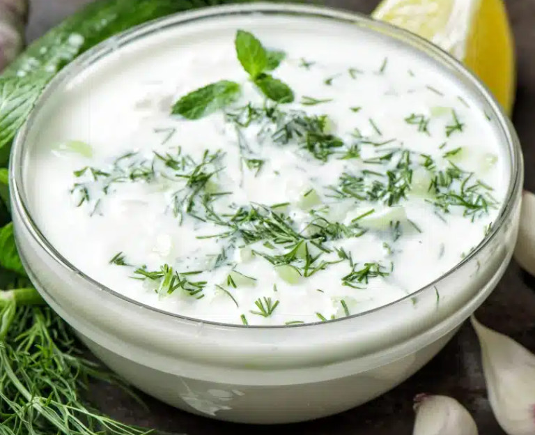

Tzatziki

Beschreibung
Einfaches Tzatziki von Hans und Jürgen, also evtl. nicht original griechisch.
Zutaten
Anleitung
- Gurke schälen, raspeln und einsalzen bis sich der Gurkensaft absetzt.
- Dill waschen, klein hacken und Zitrone auspressen.
- Griechischen Joghurt mit klein gehacktem Knoblauch und Dill verrühren.
- Gurke durch ein Sieb geben und Saft ablaufen lassen.
- Alle Zutaten vermengen, cremig rühren, mit Salz und wenig Pfeffer abschmecken